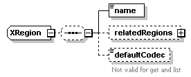
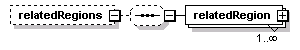
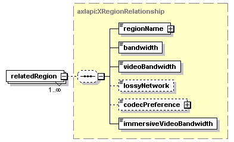

| diagram |  | ||
| namespace | http://www.cisco.com/AXL/API/10.5 | ||
| children | name relatedRegions defaultCodec | ||
| used by |
|
||
| source | <xsd:complexType name="XRegion"> <xsd:sequence minOccurs="0"> <xsd:element name="name" type="axlapi:String50" nillable="false" minOccurs="1" maxOccurs="1"/> <xsd:element name="relatedRegions" minOccurs="0" maxOccurs="1"> <xsd:complexType> <xsd:sequence minOccurs="0"> <xsd:element name="relatedRegion" type="axlapi:XRegionRelationship" minOccurs="1" maxOccurs="unbounded"/> </xsd:sequence> </xsd:complexType> </xsd:element> <xsd:element name="defaultCodec" type="xsd:string" default="G.711" nillable="false" minOccurs="0" maxOccurs="1"> <xsd:annotation> <xsd:documentation>Not valid for get and list</xsd:documentation> </xsd:annotation> </xsd:element> </xsd:sequence> </xsd:complexType> |
element XRegion/name
| diagram | |||||||
| type | axlapi:String50 | ||||||
| properties |
|
||||||
| facets |
|
||||||
| source | <xsd:element name="name" type="axlapi:String50" nillable="false" minOccurs="1" maxOccurs="1"/> |
element XRegion/relatedRegions
| diagram |  | ||||||
| properties |
|
||||||
| children | relatedRegion | ||||||
| source | <xsd:element name="relatedRegions" minOccurs="0" maxOccurs="1"> <xsd:complexType> <xsd:sequence minOccurs="0"> <xsd:element name="relatedRegion" type="axlapi:XRegionRelationship" minOccurs="1" maxOccurs="unbounded"/> </xsd:sequence> </xsd:complexType> </xsd:element> |
element XRegion/relatedRegions/relatedRegion
| diagram |  | ||||||
| type | axlapi:XRegionRelationship | ||||||
| properties |
|
||||||
| children | regionName bandwidth videoBandwidth lossyNetwork codecPreference immersiveVideoBandwidth | ||||||
| source | <xsd:element name="relatedRegion" type="axlapi:XRegionRelationship" minOccurs="1" maxOccurs="unbounded"/> |
element XRegion/defaultCodec
| diagram |  |
||||||||||
| type | xsd:string | ||||||||||
| properties |
|
||||||||||
| annotation |
|
||||||||||
| source | <xsd:element name="defaultCodec" type="xsd:string" default="G.711" nillable="false" minOccurs="0" maxOccurs="1"> <xsd:annotation> <xsd:documentation>Not valid for get and list</xsd:documentation> </xsd:annotation> </xsd:element> |
XML Schema documentation generated by XMLSpy Schema Editor http://www.altova.com/xmlspy